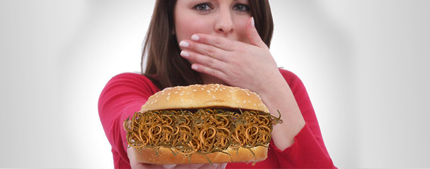

Historia mojej walki z pasożytami
Czy możecie sobie wyobrazić, jak to jest uświadomić sobie, że w twoim wnętrzu pasożytują obce organizmy? Nie da się tego porównać z żadnym horrorem! Byłam w stanie depresji i obsesyjnego pragnienia pozbycia się pasożytów w moim ciele, które nie dawały mi spać przez 24 godziny na dobę. Niestety, musiałem tego wszystkiego doświadczyć osobiście... Historia ta nie jest przeznaczona dla osób o słabym sercu.
Wszystko zaczęło się od mojej nieokiełznanej miłości do street foodu. Moją ulubioną rozrywką do niedawna były festiwale jedzenia ulicznego, targi i parki rozrywki. Bardzo lubiłam próbować wszystkiego, co gotowali uliczni sprzedawcy przy tłustych stoiskach. Nic złego poza złogami tłuszczu na bokach to jedzenie mnie nie przyniosło. Do pewnego momentu...
Jak TO we mnie się pojawiło
Przed budynkiem uniwersytetu, na którym studiowałam, pojawił jaskrawy kiosk. Tego samego dnia, w przerwie między zajęciami, poszłam ocenić jego asortyment. Uśmiechnięty sprzedawca doradził mi "nowość" - hit sprzedaży. Z wyglądu prosta konstrukcja żywności była pstrokata i obiecała, że będzie smaczna. Kilka minut później miałam twardą bułkę w dłoni z kiepsko usmażoną kiełbaską, z której spływał majonez. Wszystko to było nieudolnie przyprawione przyprawami i udekorowane liśćmi bazylii. Szczerze mówiąc, to było przerażająco. Ale uczucie głodu i krótka przerwa na lunch skłoniły mnie do podjęcia ZŁEGO ROZWIĄZANIA. Szybko zjadłam to tłuste paskudztwo i wróciłam na uniwersytet.
Konsekwencje mojego strasznego obiadu nadeszły szybko. Za kilka godzin nie mogłam wyjść z toalety. Musiałam nie pójść na ostatnie lekcje, zdobyć wystarczającą ilość wody i pójść zapłacić za moje błędy w domu. Gdyby wszystko było ograniczone do tego... Ku mojemu wielkiemu zaskoczeniu, w ciągu następnych kilku tygodni zaczęłam tracić na wadze. Dziwne, że apetyt wrócił z potrójną siłą i zjadłam jeszcze więcej niż wcześniej. Moja współlokatorka zauważyła, że jestem blada i zmęczona.
Najgorszy koszmar w moim życiu
Początkowo myślałem, że to z powodu przyszłej sesji. Jednak nieustanne swędzenie szybko uświadomiło mi, że nie chodzi tu o stres. Postanowiłem skorzystać z usług laborantów z wydziału mojej uczelni, aby potwierdzić lub obalić moje straszne przeczucia. Nie musiałem długo prosić, od razu zostałem zaakceptowany jako "królik doświadczalny". Szybko tego pożałowałam, bo już następnego dnia wszyscy wiedzieli, że mam GLISTY!
Laborantka podbiegła do mnie i z przerażeniem krzyknęła, że w moim ciele żyją ogromne robaki i trzeba je usunąć chirurgicznie. Kiedy usłyszałem to po raz pierwszy, zwymiotowałem na podłogę na oczach całej grupy studentów. Życie nie przygotowało mnie na taką psychiczną i fizyczną mękę. Kilku kolegów z klasy zaczęło krzyczeć, że mogę zarazić innych, wszyscy zaczęli się ode mnie odsuwać. Po tym wszystkim postanowiłem nawet zrezygnować z tej uczelni. Byłem całkowicie przygnębiony. Przez kilka dni z rzędu płakałam w łóżku, miałam ciągłe mdłości, gorączkę i rozstrój żołądka.
Właściwa decyzja w walce z pasożytami
Dojść do siebie mi pomogła tylko moja współlokatorka, której po prostu było mnie żal. “Już na jutro wszyscy o tym zapomnią, Natalio. Najważniejsze jest pozbyć się tych potworów”, - próbowała mnie uspokoić. Zdałam sobie sprawę, że ma rację. I tu nagle w mojej głowie znów zabrzmiał głos tego asystenta laboratoryjnego: “trzeba pilnie wycinać robaków”. Operacja? Skąd studentka może mieć pieniądze na operację? Ponadto bałam się nawet myśleć o tym, jak we mnie będą dłubać chirurdzy.
Obliczyłam swój budżet i zdałam sobie sprawę, że mam tylko JEDNĄ SZANSĘ pokonać pasożytów. I jaka jestem szczęśliwa, że wtedy potrafiłam podjąć WŁAŚCIWĄ DECYZJĘ. Właśnie taką decyzją było zamówienie , o którym się dowiedziałam od swojego profesora z uniwersytetu. Szybko przeczytałam opinie, przekonałam się, że skład jest naturalny, i zamówiłam na oficjalnej stronie producenta.
Wraz z tym, mój wykładowca uniwersytecki przepisał mi zalecenia na pozbycie się pasożytów i skierował do swojej znajomej w prywatnej klinice. Tak zaczęło się moje życie w nowym semestrze. pomógł mi dość szybko w rehabilitacji, nie spodziewałem się takiego efektu. Po kursie zażywania lekarstwa postanowiłam upewnić się, że mój organizm został oczyszczony, więc ponownie udałam się do kliniki, aby zobaczyć się z moją znajomą profesor. Testy potwierdziły, że moje ciało jest całkowicie czyste! Po otrzymaniu wyników, poszedłem prosto do tego studenta w laboratorium, który mnie przestraszył i powiedziałem innym studentom o moich wynikach testu. Dziewczyna szczerze przeprosiła na oczach całej mojej grupy i dodała, że cieszy się z mojej korekty.
Można by było tu wstawić kropek, ale historia się jeszcze nie skończyła. Okazało się, że w ciągu swojego działania ten barwny kiosk zaraził glistami jeszcze wielu studentów. Zwróciło się do mnie trzech studentów z mojej grupy (tak, tak, to byli ci, którzy niedawno ze mnie kpili) z pytaniem, jak mi się udało tak szybko się pozbyć pasożytów. Oczywiście, że się zlitowałam nad nimi i dałam im wszystkim link do zamówienia . Tak mi się udało stać się jeszcze bardziej popularną. Mam nadzieję, że moja historia pomoże wam w walce z pasożytami. No i porada na sam koniec: nie fascynujcie się jedzeniem ulicznym i podejmujcie tylko WŁAŚCIWE DECYZJE! Cześć!
27 komentarzy
Znam to wszystko. Oczywiście, nie musiałam przeżywać publicznego wstydu, ale glisty w jakiś sposób dostały się do mojego organizmu, i to w wieku 29 lat! Dobrze, że w porę zamówiłam o pozbyłam się tych paskudnych robaków. Gdy wyobrażam sobie, że dotychczas mogłabym być inkubatorem dla ich rozmnażania, KOSZMAR! Dziewczyny, uważajcie, co jecie!
Jezu! Wydaje mi się, że znam Ciebie...Chociaż być może to tylko zbieg okoliczności. Pewna dziewczyna z mojego uniwersytetu też się wyleczyła z glistów
Ile razy obiecuję sobie, że będę jadła tylko sprawdzone jedzenie. Ale zatruć się można nawet w najbardziej eleganckiej restauracji. Osobiście to miałam. Zatruliśmy się z mężem na wakacjach, za kolację z owocami morza zapłaciliśmy dużo pieniędzy. Potem musieliśmy się leczyć ponad miesiąc... Jaka szkoda, że nie wiedziałam wtedy o . Zamówię teraz wyprzedzeniem, aby zawsze była pilna pomoc pod ręką
Przydatna historia. Teraz już będę wybierać jedzenie bardziej świadomie, bo też grzeszę się z miłości do ulicznych fast foodów
Cały czas bałam się złapać robaki, ale mój syn bawił się ulicznymi kotami i cała rodzina musiała pozbywać się pasożytów.
Ja bym w ogóle zakazała te wszystkie okropne kioski z tłustymi potrawami. Co tam jeszcze może być oprócz tych pasożytów możemy sobie się tylko domyślać! Lepiej byłoby mieć użyteczne jedzenie w pobliżu uniwersytetów lub koktajle witaminowe
Naprawdę, historia nie dla nerwowych! Prawie zwymiotowałam, czytając… Horror i koszmar! Teraz już nie mogę jeść hamburgerów na ulicy. Myślałam, że robakami mogą zostać zainfekowane tylko dzieci.